15. 텔레그램을 이용한 데이터 전송¶
https://vmpo.tistory.com/85
https://jungeunlee95.github.io/python/2019/06/22/Python-%ED%85%94%EB%A0%88%EA%B7%B8%EB%9E%A8-API%EB%A1%9C-%EC%B1%97%EB%B4%87-%EB%A7%8C%EB%93%A4%EA%B8%B0/ 비번관리
15.1 챗봇 만들기 및 연결하기¶
15.1.1 텔레그램 챗봇 만들기¶
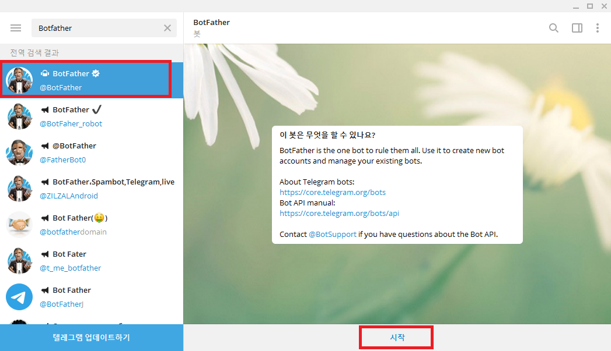
검색창에 [Botfather] 입력
가짜 계정이 많으니 최상단의 인증마크가 붙어있는 채팅방 클릭
[시작] 버튼 누르기
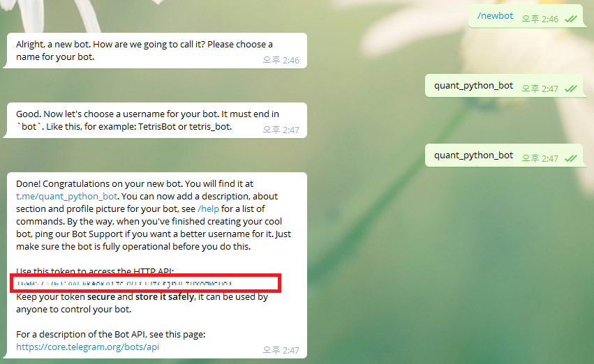
[/newbot]을 입력하면 챗봇의 이름을 입력하라고 나옵니다. [python_quant_bot]을 입력해줍니다.
그 다음에는 사용자 명을 입력하라고 나옵니다. 주의할 점은 끝이 “bot”으로 끝나야 한다는 점입니다. 편의를 위해 위와 동일하게 입력해주었습니다. 중복된 사용자 명이 있으면 오류가 뜹니다.
정상적으로 생성이 되면, 메시지 중 API 토큰이 출력됩니다. 이를 메모장에 저장해주도록 합니다.
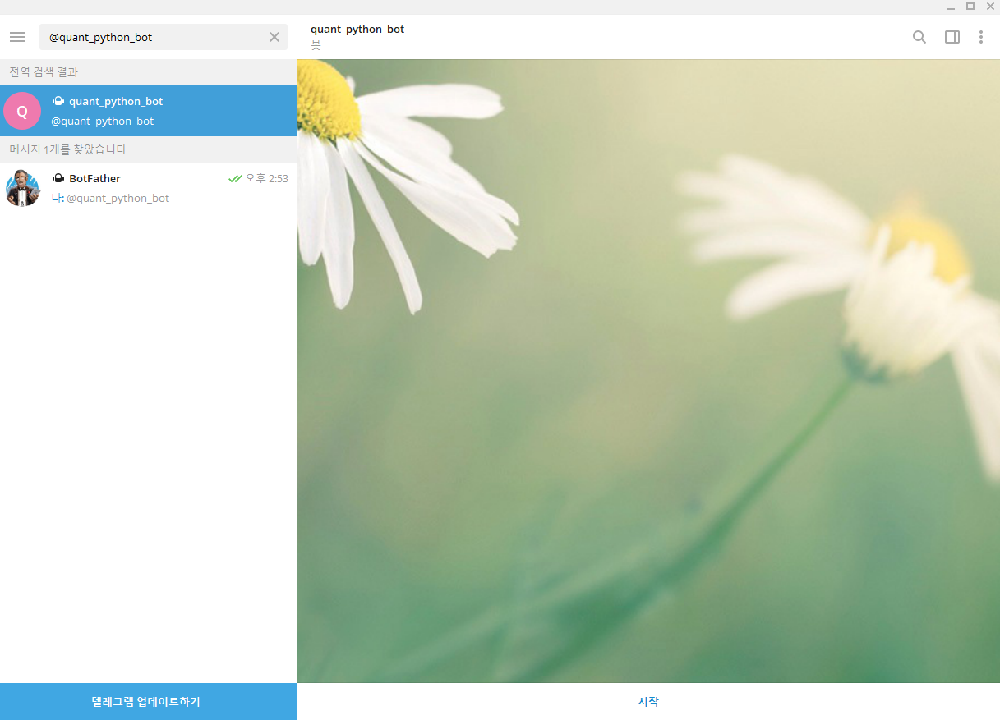
위에서 만든 챗봇 이름을 검색해보면 제대로 만들어진 것이 확인됩니다
[시작] 버튼을 눌러 활성화 시킵니다. 활성화가 되지 않은 챗봇에게는 파이썬에서 메세지를 전송할 수 없습니다.
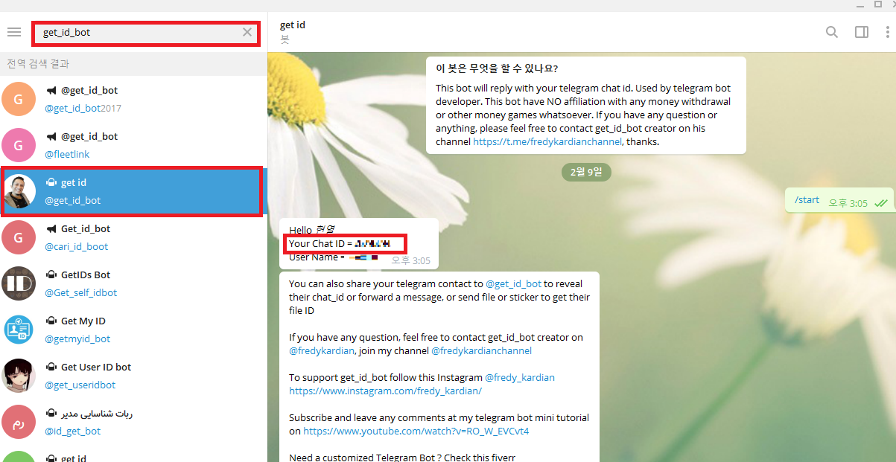
파이썬에서 챗봇으로 메시지를 전송하기 위해서는 Chat ID를 확인해야 함
get_id_bot 을 검색한 후 [/start] 입력
Your Chat ID에 해당하는 값이 나의 Chat ID
이 역시 API와 함께 저장
API Token과 Chat ID를 메모장에 입력한 후 저장합니다
15.1.2 파이썬과 텔레그램 연결하기¶
# import keyring
# tel_api = keyring.get_password('Henry', 'telegram_api_key')
# chat_id = keyring.get_password('Henry', 'telegram_chat_id')
import telegram
bot = telegram.Bot(token = tel_api)
bot.sendMessage(chat_id = chat_id, text = 'Hello World')
<telegram.message.Message at 0x1df6cc55f70>
‘Hello World’ 라는 단어가 전송되었습니다.
위 이미지를 보내보도록 하겠습니다.
bot.send_photo(chat_id = chat_id, photo = open('image/15_tel_img.jfif', 'rb'))
이미지도 보내졌습니다.
15.1.3 채널에 메세지 전송¶
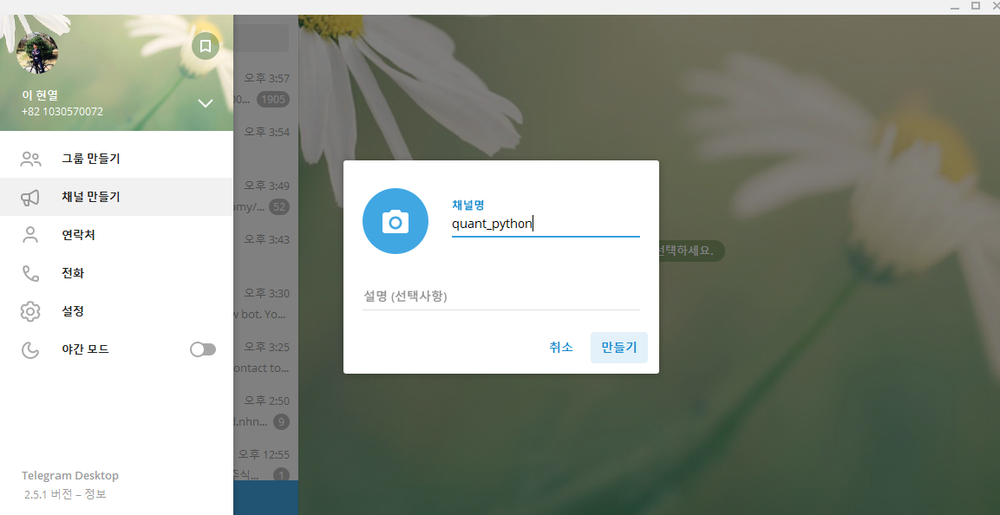 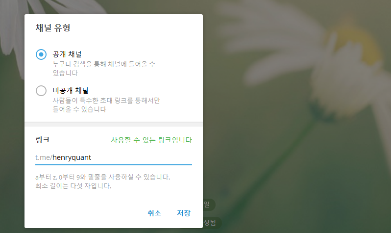
채널을 만들어줍니다.
공개와 비공개 중 공개 채널을 선택합니다. 해당 채널의 링크는 [t.me/henryquant] 가 됩니다.
참가자추가는 건너뛰기를 선택합니다.
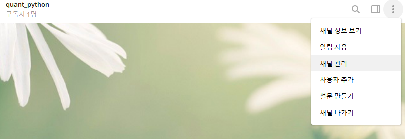 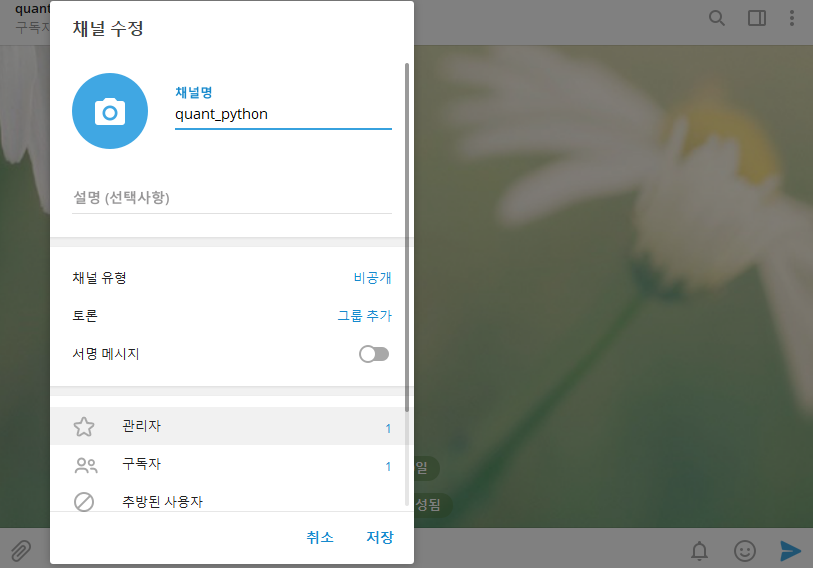 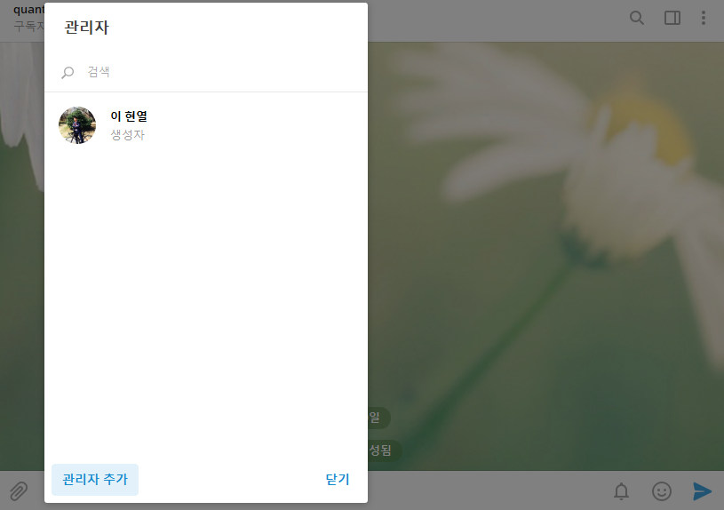 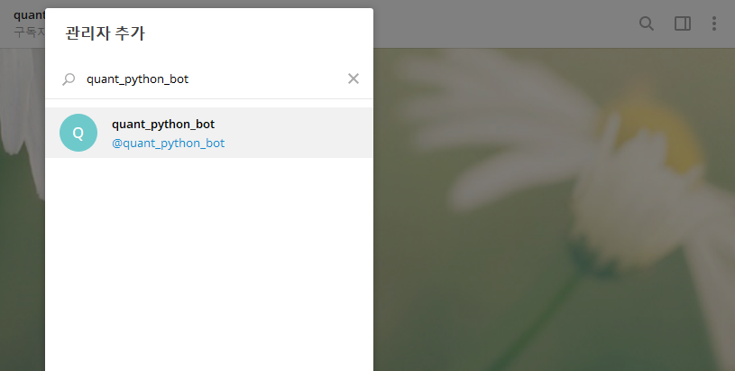
관리자추가를 통해 위에서 만든 챗봇을 추가해줍니다.
import keyring
tel_api = keyring.get_password('Henry', 'telegram_api_key')
bot = telegram.Bot(token = tel_api)
bot.sendMessage(chat_id = '@henryquant', text="채팅방으로 텍스트를 보내기!")
<telegram.message.Message at 0x1df6cc921f0>
chat_id 뒤에는 url의 뒷부분인 henryquant를 입력해줍니다.
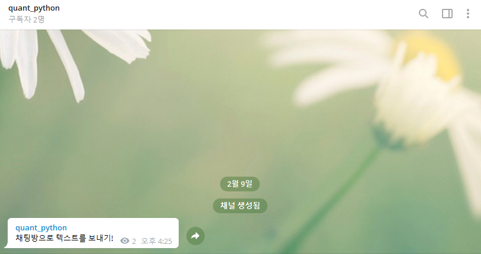
채팅방으로 메세지가 성공적으로 보내졌습니다.
15.1.4 스케쥴러를 이용한 반복작업¶
15.1.4.1 스케쥴러 예시¶
https://www.geeksforgeeks.org/python-schedule-library/
아래 코드를 test.py로 저장
매 1분마다 현재시간을 출력
cmd에서 해당 파일 실행
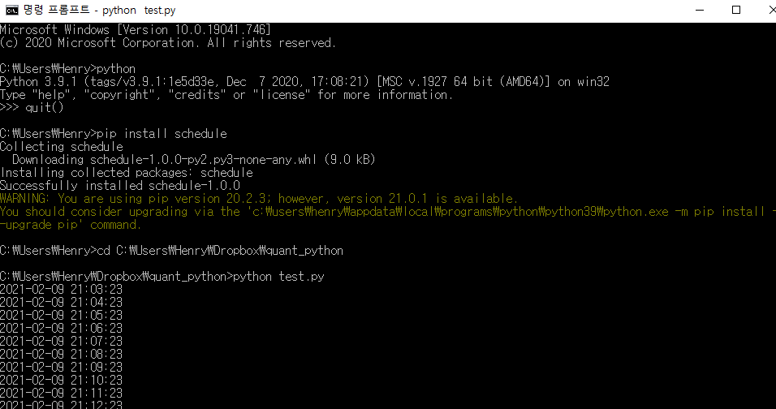
1분마다 현재시간이 출력됨을 확인할 수 있음
15.1.4.2 공시내역 보내기¶
먼저 시가총액 상위 100개 종목을 관심종목으로 지정합니다.
import pandas as pd
import numpy as np
KOR_ticker = pd.read_csv('data/KOR_ticker.csv', index_col=0)
KOR_ticker['종목코드'] = KOR_ticker['종목코드'].astype(np.str).str.zfill(6)
KOR_ticker = KOR_ticker.loc[0:99, ['종목코드', '시가총액']]
corp_list = pd.read_csv('data/corp_list.csv', index_col=0)
corp_list['corp_code'] = corp_list['corp_code'].astype(np.str).str.zfill(8)
corp_list['stock_code'] = corp_list['stock_code'].astype(np.str).str.zfill(6)
merge_list = pd.merge(KOR_ticker, corp_list, left_on = ['종목코드'], right_on = ['stock_code'])
merge_list
| 종목코드 | 시가총액 | corp_code | corp_name | stock_code | modify_date | |
|---|---|---|---|---|---|---|
| 0 | 005930 | 530116690440000 | 00126380 | 삼성전자 | 005930 | 20201209 |
| 1 | 000660 | 100464326370000 | 00164779 | SK하이닉스 | 000660 | 20201221 |
| 2 | 051910 | 70521750657000 | 00356361 | LG화학 | 051910 | 20210114 |
| 3 | 207940 | 55380105000000 | 00877059 | 삼성바이오로직스 | 207940 | 20210113 |
| 4 | 005380 | 52562374002000 | 00164742 | 현대자동차 | 005380 | 20210111 |
| ... | ... | ... | ... | ... | ... | ... |
| 95 | 026960 | 3339950000000 | 00144395 | 동서 | 026960 | 20201201 |
| 96 | 032500 | 3269294494300 | 00226352 | 케이엠더블유 | 032500 | 20201120 |
| 97 | 241560 | 3258097895000 | 01032486 | 두산밥캣 | 241560 | 20210113 |
| 98 | 008770 | 3253669230900 | 00165680 | 호텔신라 | 008770 | 20210114 |
| 99 | 012510 | 3251444976000 | 00172291 | 더존비즈온 | 012510 | 20200227 |
100 rows × 6 columns
merge_list.종목코드.to_csv('data/mystock.csv', index=False)
mystock = pd.read_csv('data/mystock.csv')
mystock['종목코드'] = mystock['종목코드'].astype(np.str).str.zfill(8)
mystock = mystock.종목코드.tolist()
mystock[: 10]
['00005930',
'00000660',
'00051910',
'00207940',
'00005380',
'00035420',
'00006400',
'00068270',
'00035720',
'00012330']
import keyring
dart_api = keyring.get_password('Henry', 'dart_api_key')
fn = 'data/report_list.csv'
try:
file = open(fn, 'r')
except IOError:
file = open(fn, 'w')
import datetime
datetime.datetime.now()